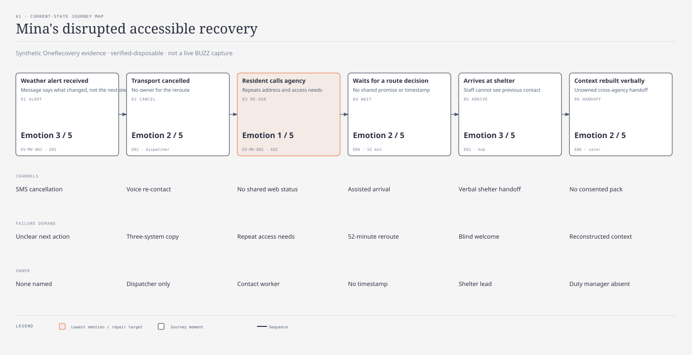

journey-map · Kai · @sd-mapper · passed · 2a1498ca

| Moment | Emotion | Pain / evidence |
|---|---|---|
| Alert | 3 | Message says what changed, not next step · EV-MV-001 / E01 |
| Cancellation | 2 | No owner for reroute · E02 |
| Re-contact | 1 | Resident repeats access needs · E02 |
| Waiting | 2 | No shared promise or timestamp · 52 minutes |
| Shelter arrival | 3 | Staff cannot see previous contact · E03 |
| Handoff | 2 | Context reconstructed verbally · E06 |